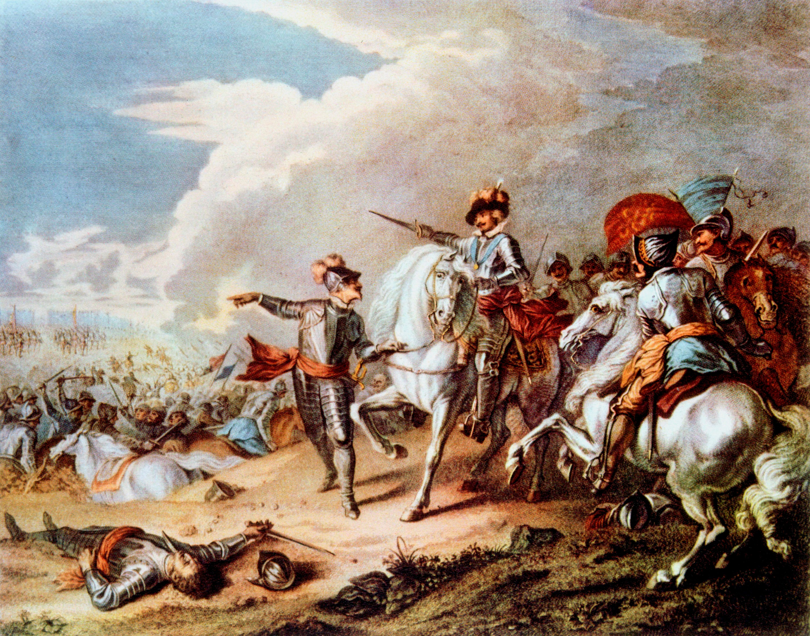

Чому потрібно вивчати історію?
Історія допомагає нам зрозуміти наше минуле, відкрити важливі уроки, які можуть вплинути на наше майбутнє. Знання історії дозволяє не тільки вчити правильні уроки, але й уникати повторення помилок, що були зроблені в минулому.
Крім того, історія формує наше розуміння культури, політики та соціальних структур, даючи глибоке розуміння світу навколо нас.
Вивчення історії важливе для розвитку критичного мислення, оскільки дозволяє аналізувати різні точки зору і порівнювати події з різних періодів.
Читати більше на сайті: Історія